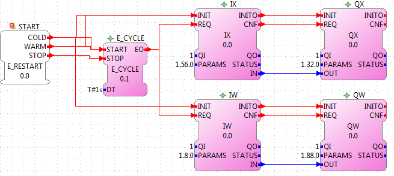

Building FORTE on Raspberry-SPS
Introduction
The Raspberry-SPS consists of a Raspberry-PI which is a low-cost embedded system with an ARM processor @700Mhz and 512MB RAM and additional modules as digital and analog modules. This tutorial shows how to cross compile FORTE for the Raspberry-SPS.
Preparation
- download the proper toolchain for your operating system where you plan to build FORTE gcc-linaro-arm-linux-gnueabihf. The path to your downloaded toolchain has to be short e.g., C:/toolchain for Windows.
- start cmake-gui and choose forte source code folder and build binaries, e.g. forte/bin/raspberrySPS and press the configure button. A new window will be opened. As generator, choose Unix Makefiles and check the Specify options for cross compiling radio button.

- configure the cross compiling options as it is illustrated within the following image and press the finish button.

- choose posix as FORTE_ARCHITECHTURE and check FORTE_MODULE_Raspberry-SPS as well as other desired modules.
- press the Configure button until nothing remains red. Afterwards press the Generate button.
- the desired make files have been generated. execute make within a console and find the FORTE executable in forte/bin/raspberrySPS/src
> cd forte/bin/raspberrySPS
> make
- copy the FORTE executable to the Raspberry-SPS and start FORTE with:
> ./forte
Example Application
To use the digital and analog IOs of the Raspberry-SPS please use the IX and QX function blocks for one bit as well as the QW and IW function blocks for word which are provided in the io folder of the tool library. Configure your 4DIAC Device with the correct IP and mapp an application on it as it is illustrated within the following image.

The structure of the PARAMS data input ports is busChannel.deviceNumber.portNumber. The Raspberry-SPS has two I2C bus channels. The number of the different devices is listed in the following table. The port number always starts at 0.
| Device Type | Device Number |
|---|
| 8 digital inputs | 56 |
| 8 digital outputs | 32 |
| 5 analog inputs | 8 |
| 4 analog inputs | 88 |